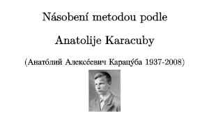

Karacubův algoritmus násobení celých čísel snadno a rychle
3. října 2021 Dr. Zdeněk Moravčík
Video vysvětluje, co je bezpodmínečně v lidské společnosti nutné udělat pro vyřešení závislosti evropských států na asijské produkci. Pouhé dílčí nápady a chytristiky nestačí.
Řešením je pouze komplexní a rychlé předání lidských kompetencí strojům s mozkem, jejichž konstrukce je již dlouhé roky připravena.
Shlédnout video přes IPFS (IPFS je obyčejně pomalý):

Shlédnout video přes YouTube:
Video popisuje rekurzivní algoritmus podle sovětského matematika Anatolije Karacuby, který svůj algoritmus násobení vymyslel začátkem 60. let minulého století.
Karacubův algoritmus umí vynásobit dvě celá čísla rychleji než to umí metoda, kterou vás všechny učili ve škole. Video si neklade za cíl popisovat zvláštnosti a výhody Karacubova algoritmu. Cílem videa je rychle pochopit jak algoritmus pracuje.
Klíčová slova: matematika, algoritmus, Anatolij Karacuba, Anatoly Karatsuba, násobení dvou celých čísel